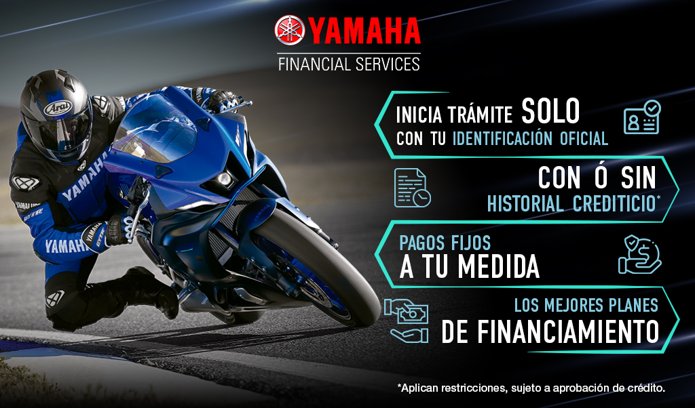

Historia
Financiamiento
Servicio técnico
Capacitación
Contacto
YAMAHA FINANCIAL SERVICES

Requisitos mínimos:
Identificación oficial (INE o Pasaporte vigentes).
Comprobante de ingresos (últimos 3 meses).
Comprobante de domicilio (No mayor a 2 meses).